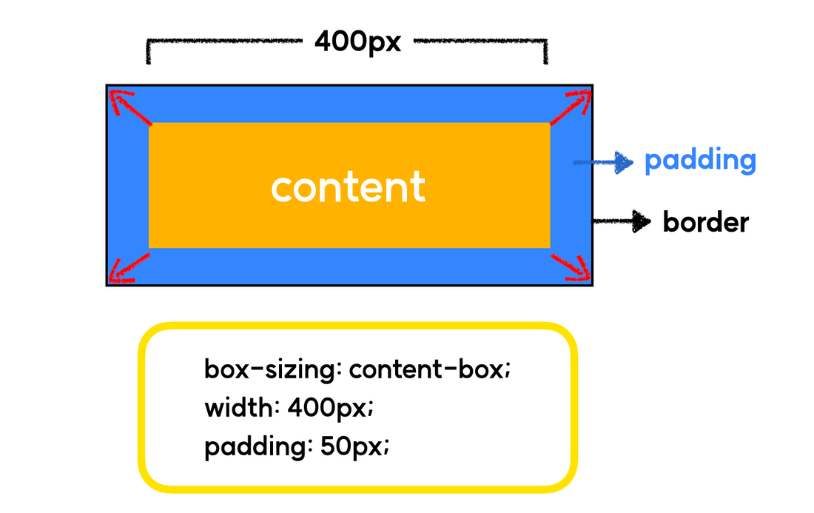
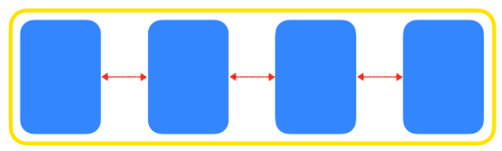
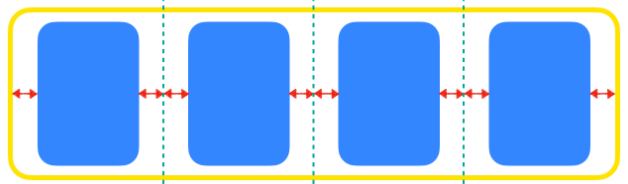
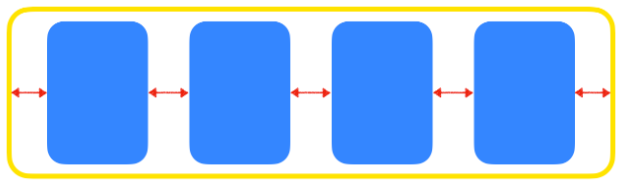
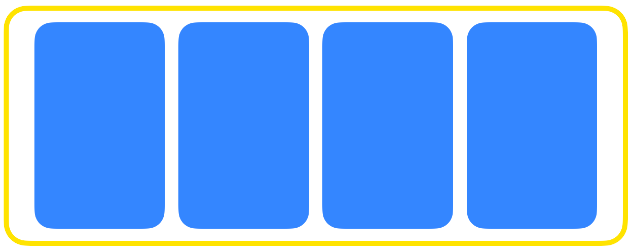
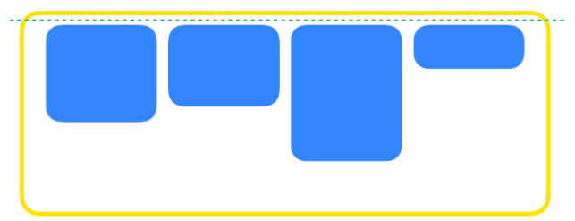
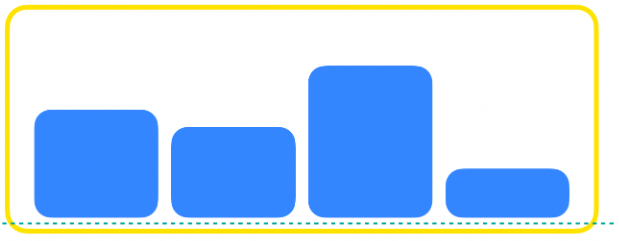
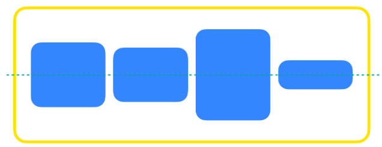

Border 영역을 기준으로 box의 size를 적용합니다.
[인프런x코드캠프] 강력한 CSS
목적
css 부분에서 단순히 구글링(야매)로 해결하고 넘어갔던 부분를 제대로 익히기 (기초다지기)
학습 상태
- 섹션 0. CSS 개요
- 섹션 1. 레이아웃 (float&flex)
- 섹션 2. 레이아웃 (flex2)
- 섹션 3. 폰트&단위
- 섹션 4. 배경&색상
- 섹션 5. position / transition
- 섹션 6. transform
- 섹션 7. animation
- 섹션 8. grid 레이아웃
- 섹션 9. 반응형 레이아웃
학습 메모
학습 도중 새롭게 알게된 사실이나 중요한 부분에 대해서 메모합니다.
섹션 0. CSS 개요
- 자손 선택자 : 공백으로 구분
- 다중 선택자 : 공백 없이 연속으로 붙임
- "box-sizing: content-box" : Content 영역을 기준으로 box의 size를 적용합니다. (기본값)

- "box-sizing: border-box" : Border 영역을 기준으로 box의 size를 적용합니다. (일반적으로 모든 오브젝트에 border-box로 수정해줌)

- "display: block" : 블록 요소를 여러개 연속해서 쌓을 경우 자동으로 다음 줄로 넘어간다. 좌우 양 쪽으로 늘어나 부모 요소의 너비를 가득 채운다.
- "display: inline" : 여러개의 요소를 연속해서 입력해도 자동으로 다음 줄로 넘어가지 않는다. 태그에 할당된 공간 만큼의 너비만 차지한다.
- inline 요소에는 width 등의 크기가 지정되지 않음
섹션 1. 레이아웃 (float & flex)
- 가상클래스 선택자 : 선택자 뒤에 :가상 이벤트 를 붙이면 특정 이벤트마다 적용 할 스타일을 설정 할 수 있으며, 이를 가상 클래스라고 한다.
:first-child: 첫번째 자식:last-child: 마지막 자식:nth-child(3): 3번째 자식:nth-child(2n): 2의 배수번째 자식:nth-child(2n - 1): 홀수번째 자식:nth-child(3n): 3의 배수번째 자식:hover: 마우스를 요소에 올렸을 때과거에는 float를 사용해서 레이아웃을 구성하였고,이후에 flex가 등장하며 flex를 보편적으로 사용하게 되었고 점차 float를 사용하지 않게되었습니다.마지막으로 제일 나중에 grid가 등장하였으며, 현대 웹에서는flex와 grid를 혼용하는 추세이다.float: HTML 요소를 일반적인 흐름(normal flow)으로부터 벗어나서 특정한 컨테이너의 좌측 혹은 우측을 감싸는 형태로 강제 배치할 수 있도록 도와주는 속성입니다.- float: none (기본값)
- float: left
- float: right
clear: float가 적용된 요소에 추가로 줄 수 있는 속성으로, float의 영향력을 해당 요소에 한해 해제한다.- clear: none (기본값)
- clear: left
- clear: right
- clear: both
float: right는clear: left로는 영향력을 해제할 수 없음calc(): css 내부에서의 계산을 하는 함수- ex,
width: calc(100% - 200px); - flex-direction (배치 방향 설정)
row(행) : 중심축을 가로 방향으로 배치합니다.column(열) : 중심축을 세로 방향으로 배치합니다.- justify-content (메인축 방향 정렬)
- 메인축은 flex-direction방향과 동일합니다.
- 메인축 방향으로 어떻게 정렬할지 결정합니다.
justify-content: flex-start(기본값) : 왼쪽 정렬justify-content: center(기본값) : 중앙 정렬justify-content: space-between: 동일한 여백을 두고 정렬 justify-content: space-around: 동일한 여백을 두고 정렬 justify-content: space-evenly: 동일한 여백을 두고 정렬 - align-items (교차축 방향 정렬)
align-items: stretch: 위 아래로 쭉 늘려서 배치함 align-items: flex-start: 시작점에 맞춰 배치함 align-items: flex-end: 시작점에 맞춰 배치함 align-items: center: 중앙에 맞춰 배치함 